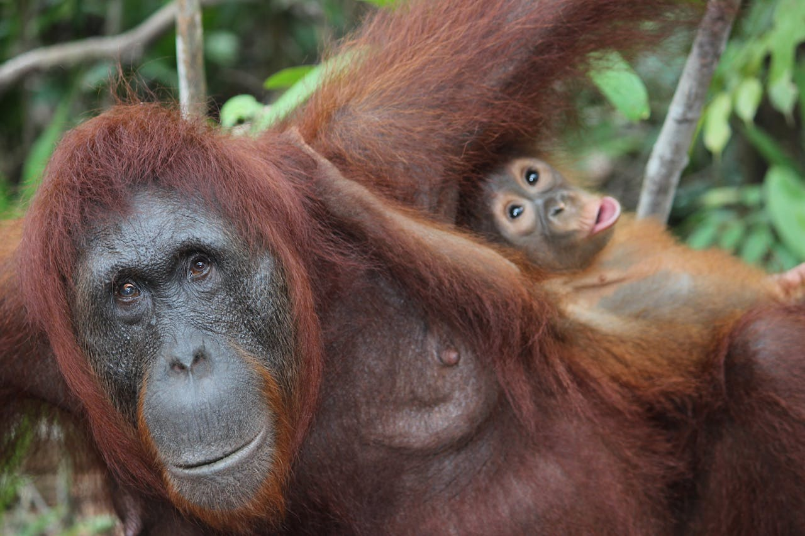

Why they need our help

by Ibrahim ALbrdawil Pexels.
Orangutans are incredible intelligent animals and one of our closest relatives, sharing 97% of our DNA. Unfortunately, they are critically endangered due to deforestation and habitat loss. Protecting them not only helps save these amazing creatures but also preserves the rainforests they call home - essential for also the health of our planet. Let’s make a difference and help secure a future for orangutans.
A century ago, there were likely more than 230,000 orangutans in total, but today, the Bornean orangutan population is estimated at about 104,700, the Sumatran at approximately 13,846, and the recently identified Tapanuli species numbers around 800 individuals, making it the most endangered of all great apes.
Their populations have declined sharply due to habitat loss from deforestation, illegal logging, and land conversion for agriculture, particularly palm oil plantations.Protecting orangutans is crucial not only for preserving these intelligent creatures but also for maintaining the health of their rainforest habitats, which support immense biodiversity and play a vital role in global climate regulation. By supporting conservation efforts, we can help ensure a future for orangutans and the myriad forms of life that depend on their forest homes